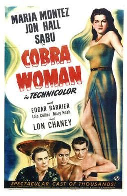
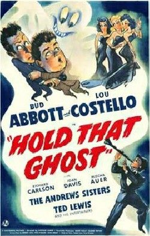
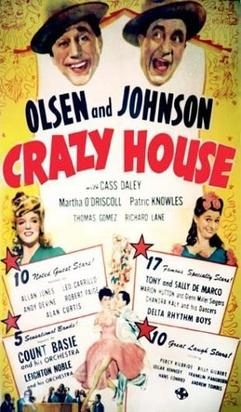
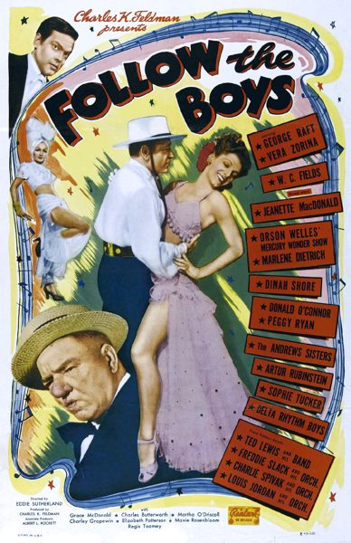

THE STANFORD THEATRE
Now Showing
·
Upcoming
·
Past
·
Search
November 3 - 30, 2012
UNIVERSAL PICTURES Part 2: 1940-1945
8 bills
November 3 - 4
Phantom of the Opera (1943)
92 min

Cobra Woman (1944)
70 min
November 7 - 9
Buck Privates (1941)
85 min

Hold That Ghost (1941)
75 min
November 10 - 11
Saboteur (1942)
108 min
The Bank Dick (1940)
72 min
November 14 - 16
The Wolf Man (1941)
70 min
The Mummy's Hand (1940)
67 min
November 17 - 18
Back Street (1941)
89 min
Shadow of a Doubt (1943)
108 min
November 21 - 23
The Scarlet Claw (1944)
74 min

Crazy House (1943)
80 min
November 24 - 25
The Suspect (1944)
85 min
Phantom Lady (1944)
87 min
November 28 - 30

Follow the Boys (1944)
122 min
Chip Off the Old Block (1944)
71 min